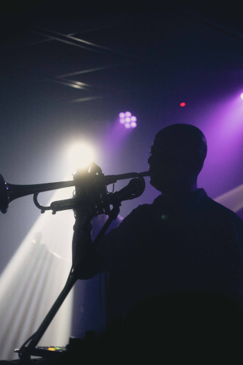

Por que estudar o Improviso Livre Progressivo?
Muitos músicos acreditam que improvisar de forma livre é apenas tocar notas aleatórias, mas a verdadeira liberdade criativa exige método. Este manual foi estruturado de forma progressiva para guiar sua mente e seus dedos na construção de narrativas musicais sólidas, independentemente do seu instrumento de escolha. Você aprenderá a transformar conceitos teóricos complexos em pura expressão artística instantânea.
A metodologia por trás da liberdade
O grande diferencial do método progressivo é não pular etapas. Nós começamos desconstruindo o medo da página em branco através de pequenas células rítmicas e melódicas. À medida que sua confiança cresce, inserimos camadas de texturas, modulações e dinâmicas, permitindo que você transite livremente por qualquer gênero musical, do Jazz tradicional à Música Brasileira Contemporânea.

O que você vai aprender
Diga adeus à repetição de clichês e à sensação de ficar travado nas mesmas escalas. Este guia prático foi desenhado para expandir seus horizontes musicais através de um passo a passo focado na autonomia criativa. Chega de depender de fórmulas prontas, padrões decorados ou de esperar pela "inspiração divina" para conseguir tocar algo que realmente venha do coração. O nosso método progressivo desconstrói o processo da improvisação em etapas lógicas, transformando o caos das notas soltas em uma linguagem organizada e expressiva.
Garanta sua cópia digital gratuita hoje
Não deixe sua evolução musical para depois. Insira seus dados abaixo para receber o link de download direto do manual em formato PDF de forma 100% gratuita.
Seus dados estão 100% seguros
Nós respeitamos sua privacidade tanto quanto respeitamos a boa música. Seu endereço de e-mail será utilizado exclusivamente para o envio do link do Manual de Improviso e de dicas semanais de estudos. Você pode cancelar a inscrição a qualquer momento com apenas um clique.